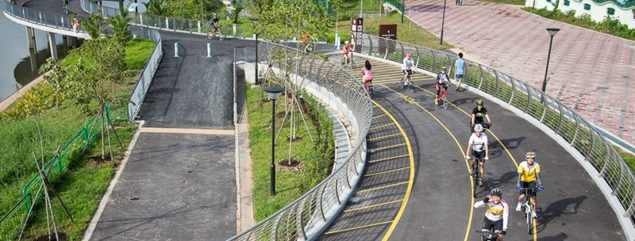

1
2
3
home
about me
our goal
sp efforts
3 Goals that we can set in doing your part in sustainable development.
we can practice the 3Rs
Reduce: We can take this primary step when using water, electricity or gas (e.g., switching off devices or turning off the tap when we're not using them) or even when selecting items at the supermarket (e.g., products from close to where we live waste less on transport).
Recycle: We can do this simple act by sorting waste into specific containers. Processing recycled waste properly not only reduces gases and toxic waste, but also leads to new manufactured products.
Reuse: This is when we repurpose things for a “second life”, like turning glass food jars into pen holders or old clothes into dust rags.
we can save energy and change your home's sourse of energy.
Much of our electricity and heat is powered by coal, oil and gas. Use less energy by lowering your heating and cooling, switching to LED light bulbs and energy-efficient electric appliances, washing your laundry with cold water or hanging things to dry instead of using a dryer. By decreasing the use of fossil fuels, solar power helps reduce the amount of carbon dioxide and other greenhouse gases released into the atmosphere.
You can install solar panels on your roof to generate energy for your home. Solar can replace about 80% of the energy needed to heat indoor spaces and water.
We can walk, bike or take public transport more.

The world’s roadways are clogged with vehicles, most of them burning diesel or gasoline. Walking or riding a bike instead of driving will reduce greenhouse gas emissions and help your health and fitness. For longer distances, consider taking a train, bus or carpool whenever possible. Living car-free can reduce your carbon footprint by up to 2 tonnes of CO2 per year compared to a lifestyle using a car.